Soste
Il portale delle Smart Guide è uno spazio digitale che raccoglie risorse pratiche e aggiornate in un unico ambiente intuitivo. Strumenti chiari e organizzati per organizzarti e trovare subito ciò che ti serve.
01.
Creazione sosta
Panoramica sulla creazione e gestione della Sosta, dall'inserimento dei dati al salvataggio e invio della stessa.
Punti di accesso alla creazione
La creazione di una nuova sosta avviene:
Menu a tendina
Cliccando sulla voce "Gestione e consultazione" viene visualizzato un menu a tendina, da cui è possibile accedere alla voce "Soste", al cui interno è presente il pulsante di creazione.
Dalla dashboard è possibile creare nuove soste cliccando "Crea nuova sosta".

Creazione sosta
Passaggi per creare una nuova sosta
Dopo aver cliccato il pulsante "Nuova sosta", seguire tutti i passaggi indicati a sistema e inserire le informazioni necessarie per cominciare l'iter di creazione di una nuova sosta.
Ricerca tramite uno dei parametri visualizzati
Ricercare la nave tramite uno dei campi visualizzati a sistema: Nome Nave, IMO, MMSI o Call Sign. In questo caso selezionare il "Nome Nave".
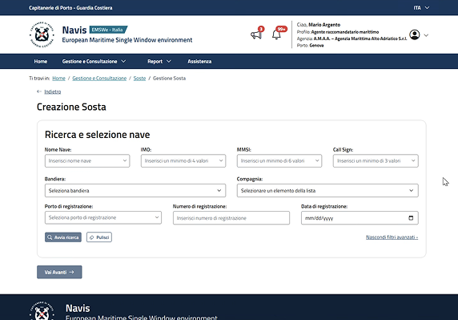
Ricerca della nave
Selezionare una dei parametri mostrati come "Nome Nave". Successivamente avvia la ricerca cliccando "Avvia Ricerca".
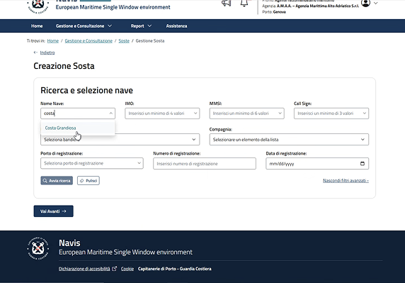
Selezione nave e conferma
I risultati vengono visualizzati tramite una vista tabellare, selezionare una nave e cliccare "Vai avanti" per cominciare la creazione.
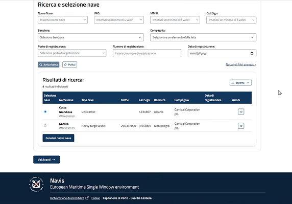
Creazione sosta
Step di creazione di una nuova Sosta
Per creare una nuova sosta, procedere seguendo i passaggi sottostanti:
Dati generali
Consente di inserire le informazioni generali, quali: Porto di sosta (con ETA e ETD), Porto Precedente (con ETD) e Porto successivo (con ETA).
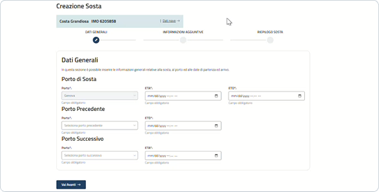
Informazioni aggiuntive
Consente di inserire informazioni aggiuntive utili a definire meglio la sosta, quali: Servizi Tecnico Nautici in Arrivo, Bunkeraggio, Trasporto Passeggeri, Trasporto Merci e Operazioni di Allibo.
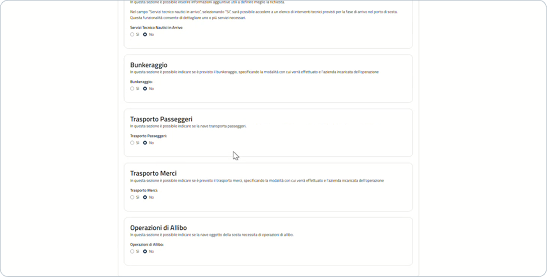
Riepilogo sosta
Consente di visualizzare il riepilogo delle informazioni inserite negli step precedenti e procedere al salvataggio della sosta.
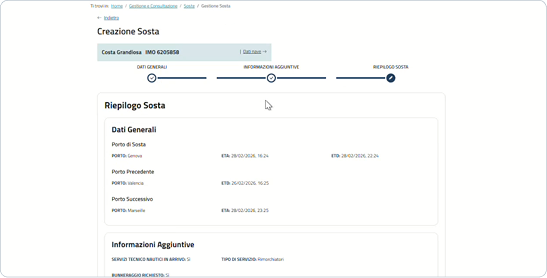
Creazione di una nuova Sosta
Dati generali
DATI GENERALI
INFORMAZIONI AGGIUNTIVE
RIEPILOGO SOSTA
Informazioni generali
In questo step è possibile inserire le informazioni generali relative alla sosta, ai porti ed alle date di partenza e arrivo.
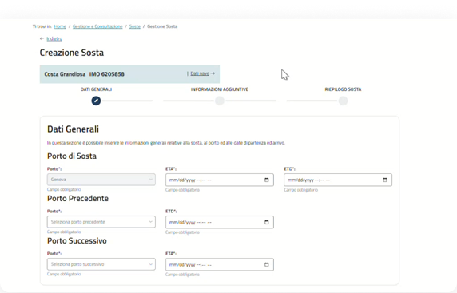
Inserimento dati e possibili errori
Inserire Porto di sosta (ETA/ETD), Porto Precedente (ETD) e Porto successivo (ETA). Se i dati non sono corretti il sistema avvisa e non consente di procedere.

Revisione e conferma
Verificato il corretto inserimento, selezionare "Vai avanti" per procedere allo step successivo.
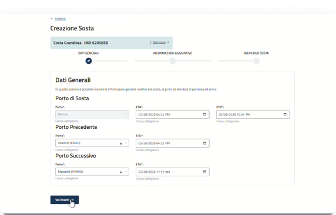
In caso di incongruenze tra le date di arrivo e partenze tra i vari porti, il sistema informerà l'utente tramite messaggi di errore posizionati sotto i campi compilati in modo errato e tramite alert informativi.
Creazione di una nuova Sosta
Informazioni aggiuntive
DATI GENERALI
INFORMAZIONI AGGIUNTIVE
RIEPILOGO SOSTA
Visualizzazione delle informazioni aggiuntive
Il sistema dà la possibilità di inserire informazioni aggiuntive utili a definire meglio la sosta e a pre-popolare l'elenco degli Obblighi di Dichiarazione.

Aggiunta e modifica delle informazioni
L'utente può aggiungere e successivamente modificare: Servizi Tecnico Nautici in Arrivo, Bunkeraggio, Trasporto Passeggeri, Trasporto Merci e Operazioni di Allibo.
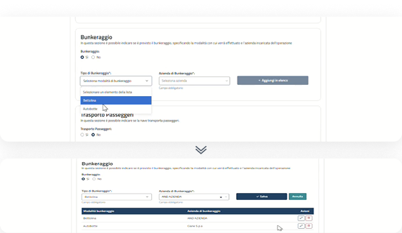
Verifica e step successivo
Dopo aver selezionato le informazioni aggiuntive, cliccare su "Vai avanti" per proseguire allo step finale.
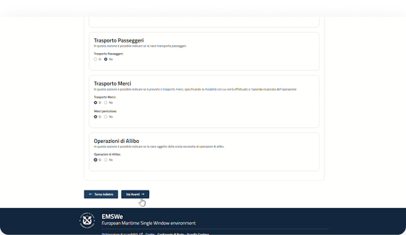
Creazione di una nuova Sosta
Inserimento informazioni aggiuntive
Servizi Tecnico Nautici
Dopo aver selezionato "Sì", scegliere una o più tipologie di servizio.
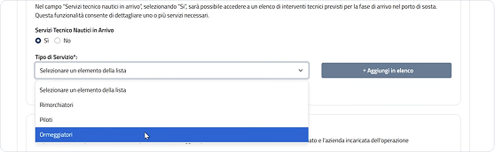
Dopo aver selezionato la tipologia cliccare "Aggiungi in elenco".
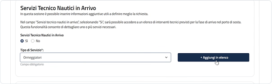
La tipologia aggiunta può essere eliminata tramite l'"icona del cestino".
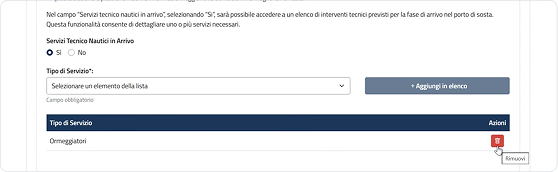
Bunkeraggio
Selezionare una o più tipologie e aziende, quindi cliccare "Aggiungi in elenco".
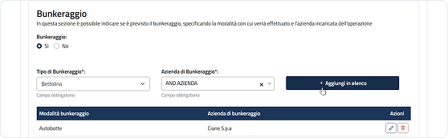
È possibile modificare o eliminare tramite gli appositi pulsanti.
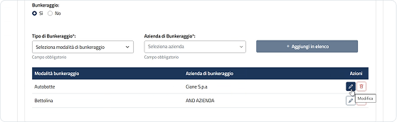
Dopo aver modificato, cliccare "Salva" o "Annulla".

Creazione di una nuova Sosta
Riepilogo sosta
DATI GENERALI
INFORMAZIONI AGGIUNTIVE
RIEPILOGO SOSTA
Visualizzazione riepilogo
Nell'ultimo passaggio è possibile consultare tutte le informazioni inserite negli step precedenti.
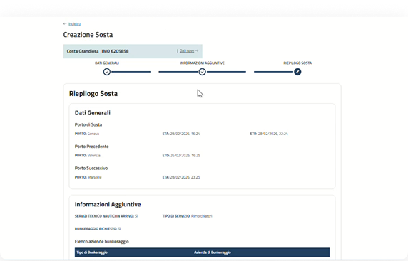
Salva e invia
Dopo aver verificato il corretto inserimento dei dati negli step precedenti, cliccare "Salva e invia" per procedere.
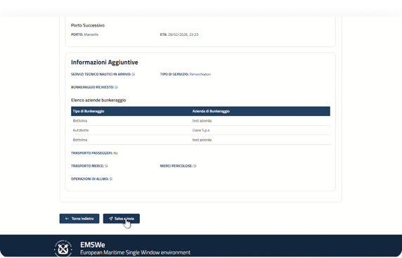
Conferma salvataggio
Il sistema mostra una finestra di conferma e comunica l'avvenuta creazione. Alla sosta viene assegnato un "Visit ID" e assume lo stato "Aperta".
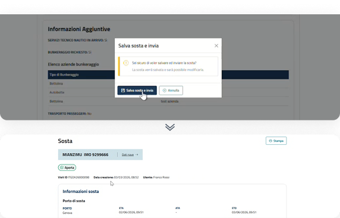
02.
Ricerca e consultazione di una sosta
Una panoramica sui flussi di ricerca e consultazione delle Soste.
Punti di accesso per la ricerca soste
La ricerca di una sosta avviene:
Menu a tendina
Cliccando sulla voce "Gestione e consultazione" viene visualizzato un menu a tendina, da cui è possibile accedere alla voce "Soste", al cui interno è possibile ricercare le soste presenti a sistema.
Dalla dashboard, è possibile ricercarle attraverso l'apposita sezione: "Ricerca sosta".
Sarà possibile visualizzare le soste nella sezione "Soste nel porto di oggi".
Nella sezione Panoramica, nella voce "Lista soste" sarà presente l'elenco delle soste.
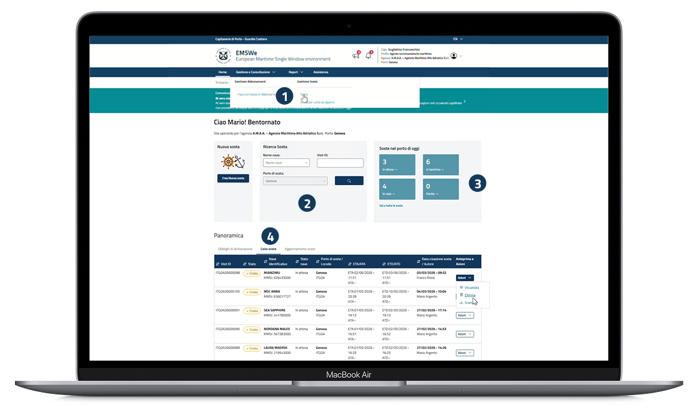
Ricerca e consultazione di una sosta: lista soste
Funzionalità in pagina
Accedendo alla sezione "Lista soste", il sistema mostra i filtri di ricerca disponibili, sia di base sia avanzati. Dopo aver selezionato i criteri desiderati e cliccato su "Cerca", i risultati vengono visualizzati in forma tabellare.
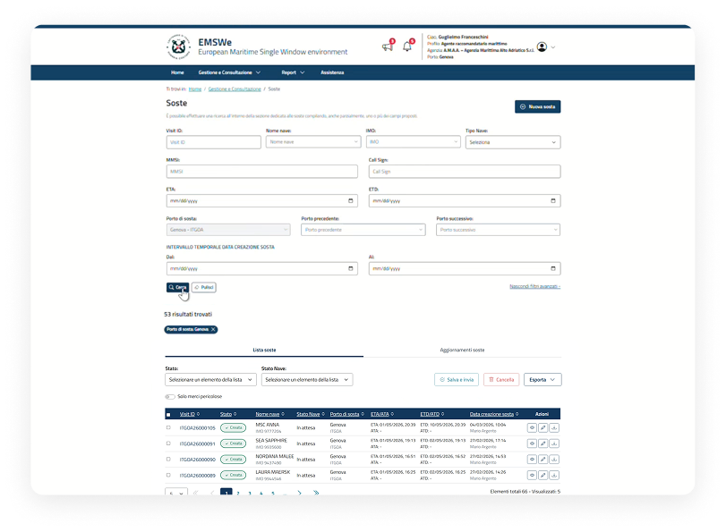
Sezione filtri
La sezione Filtri consente di ricercare le soste secondo diversi criteri. Sono disponibili filtri base e filtri avanzati per affinare la ricerca.
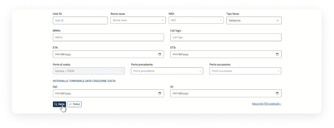
Visualizzazione di "Lista Soste" o "Aggiornamento Soste"
È possibile scegliere di visualizzare i risultati di ricerca della lista soste e degli aggiornamenti delle soste.

Filtri e azioni sulla tabella
I risultati della ricerca possono essere filtrati per "Stato" e "Stato Nave". Selezionando una o più soste è possibile salvare e inviare, cancellare ed esportare. Infine, per "Lista soste", sarà possibile visualizzare solo le soste aventi merci pericolose tramite l'apposito pulsante.
Visualizzazione soste tramite tabella
I risultati della ricerca vengono presentati in una tabella, mostrando le informazioni e azioni principali.
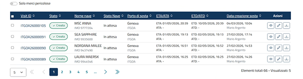
Focus sull'azione di visualizzazione delle merci pericolose (Lista soste)
È possibile visualizzare o nascondere le merci pericolose tramite l'interazione con il pulsante evidenziato.
Di default il pulsante sarà disattivato, saranno visualizzate tutte le soste.
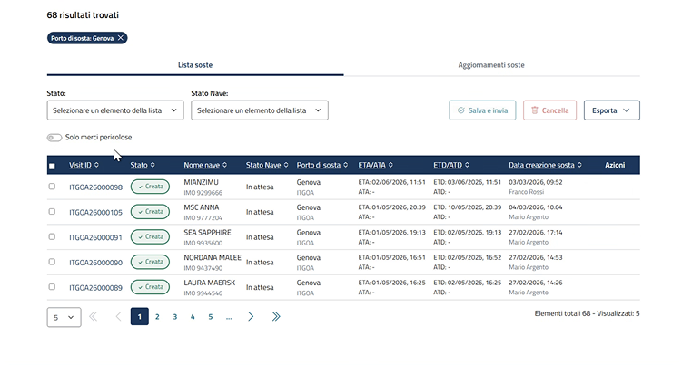
Se il pulsante è attivo, saranno mostrate solo le soste per quelle navi che dichiarano di trasportare merci pericolose.
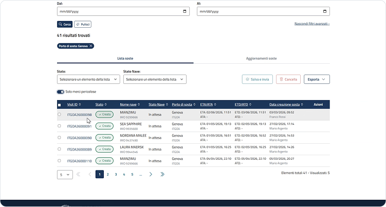
Visualizzazione risultati in tabella: Lista Soste e Aggiornamento soste
I risultati di ricerca delle soste, possono essere visualizzati tramite tabella secondo due modalità:
Lista Soste
È l'elenco di tutte le soste presenti a sistema, create dall'utente che ha effettuato l'accesso, sulle quali è possibile accedere al dettaglio e svolgere diverse azioni.
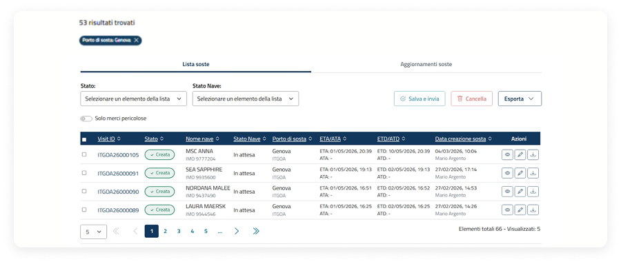
Aggiornamenti soste
È un elenco di attività che l'utente deve svolgere sia per gestire le soste create dal Collaboratore, sia per integrare gli Obblighi di Dichiarazione. Sarà possibile filtrare i risultati in tabella per "Attività" e "Stato Attività".
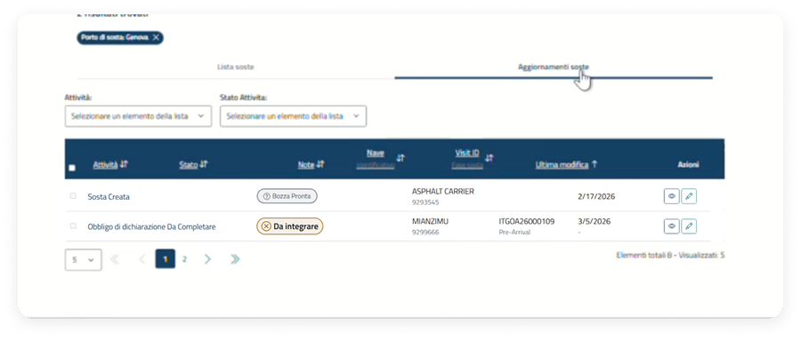
Ricerca e consultazione
Dettaglio della sosta
All'interno del fascicolo sono consultabili le seguenti informazioni:
- Informazioni sosta
- Informazioni aggiuntive
- Obblighi di dichiarazione
- Comunicazioni
- Controlli frontiera
- Merci
- Rifiuti
- Sicurezza
- FAL
Possibili azioni secondarie sulla sosta:
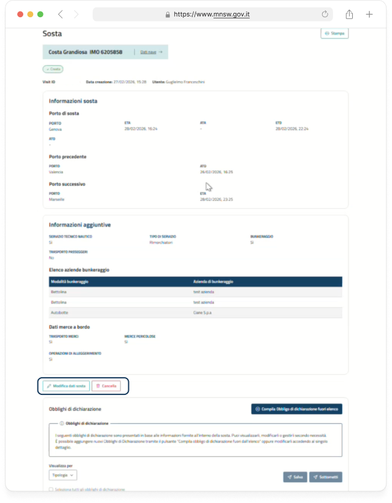
Ricerca e consultazione Sosta
Focus Obblighi di Dichiarazione
Visualizzazione per fase o tipologia
All'interno della sezione di Obblighi di Dichiarazione è possibile visualizzare questi ultimi per "Fase" o "Tipologia".
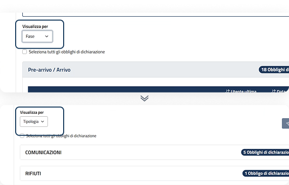
Visualizzazione tramite accordion
L'elenco degli Obblighi di Dichiarazione è visualizzato tramite sezioni accordion, che inizialmente sono aperte.
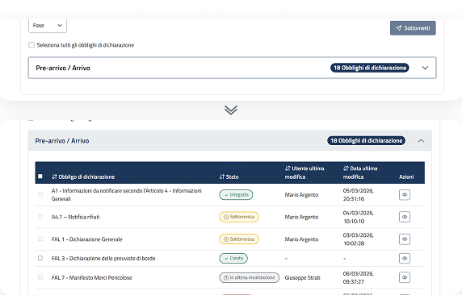
Azioni disponibili
Dopo aver selezionato uno o più Obblighi di Dichiarazione tramite checkbox è possibile sottometterli. È inoltre possibile accedere al dettaglio degli obblighi con l'icona dell'occhio o compilare con il pulsante "Compila".
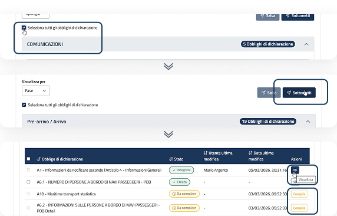
Ricerca e consultazione Sosta
Focus Obblighi di Dichiarazione
Azione sul pulsante
All'interno della sezione di Obblighi di Dichiarazione è possibile aggiungere alla lista altri Obblighi di Dichiarazione fuori elenco tramite l'apposito pulsante.
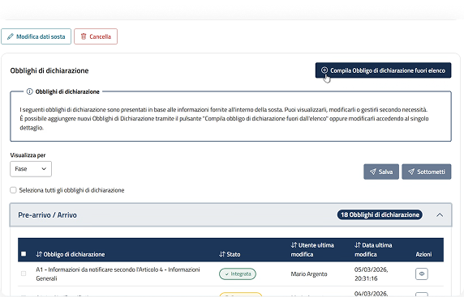
Selezione obblighi di dichiarazione
L'elenco degli Obblighi di Dichiarazione è visualizzato tramite menu a tendina; selezionare uno o più Obblighi di Dichiarazione tramite checkbox.

Aggiungi obblighi di dichiarazione
Una volta selezionati gli Obblighi di Dichiarazione, cliccare il pulsante "Aggiungi" per inserirli nell'elenco.
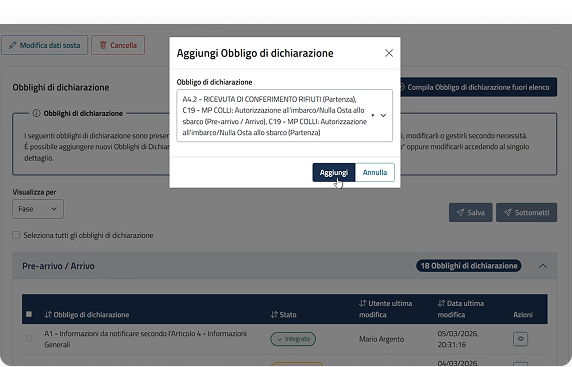
03.
Modifica Sosta
Panoramica sul flusso di modifica delle soste, successivamente alla creazione della stessa.
Modifica Sosta
Punto di Accesso della modifica di una sosta
Attivazione "Modifica" dall'elenco risultati di ricerca
Nell'elenco dei risultati di ricerca delle soste è possibile accedere al dettaglio in modalità modifica cliccando sull'"icona della matita".
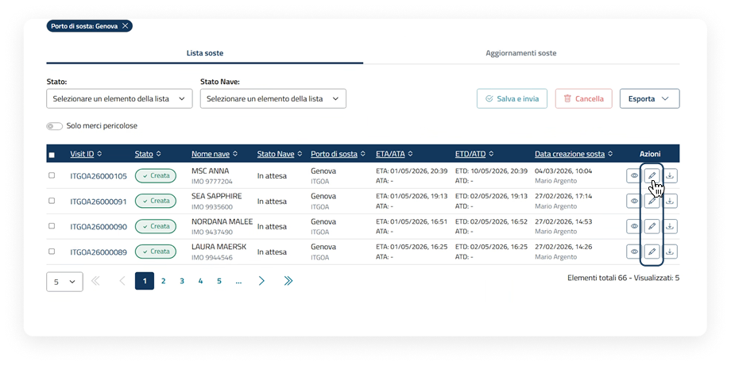
Attivazione Modifica da pagina di dettaglio della sosta
Nell'elenco dei risultati di ricerca delle soste è possibile accedere al dettaglio in modalità visualizzazione cliccando sull'"icona dell'occhio". All'interno del dettaglio per procedere con la modifica sarà necessario cliccare sul pulsante "Modifica Dati Sosta".
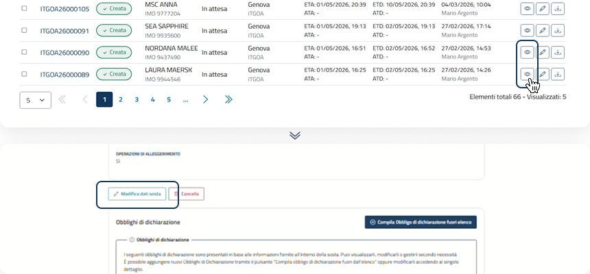
Modifica di una sosta
Dati generali
DATI GENERALI
INFORMAZIONI AGGIUNTIVE
RIEPILOGO SOSTA
All'interno della pagina di dettaglio in modalità Modifica, il processo di aggiornamento delle informazioni seguirà lo stesso flusso guidato a step, descritto nel flusso di "Creazione di una sosta" (pag 00).
All'interno della pagina non è possibile scegliere una nave differente rispetto a quella precedentemente inserita né il porto di sosta.
È consentita esclusivamente la modifica del porto successivo di sosta e relativo ETD, se è stato fissato l'ATA all'interno della sosta.
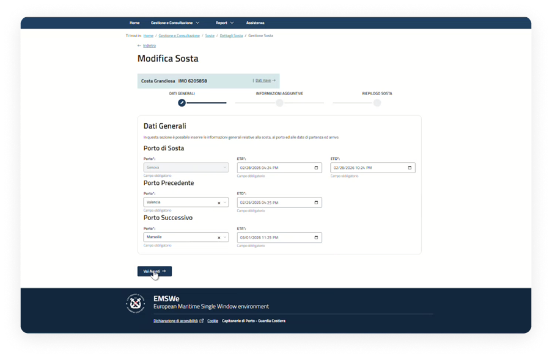
Modifica di una sosta
Riepilogo sosta
DATI GENERALI
INFORMAZIONI AGGIUNTIVE
RIEPILOGO SOSTA
Salva modifica
All'interno del riepilogo della sosta, sarà possibile salvare la modifica tramite l'apposito pulsante "Salva modifica".
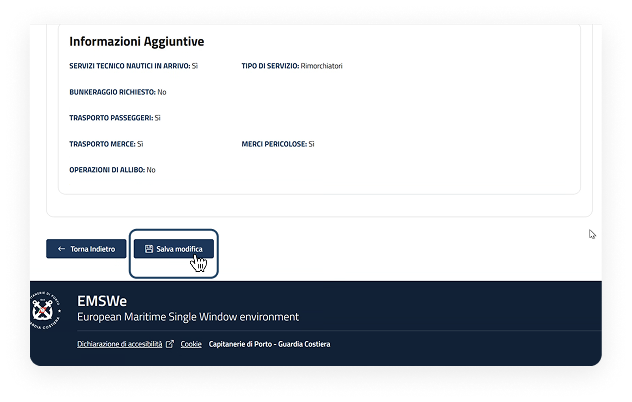
Conferma salvataggio
Il sistema mostra una finestra che informa l'utente dell'avvenuto aggiornamento delle informazioni.

Azioni disponibili dopo modifica sosta
Dopo aver salvato le modifiche della sosta, le azioni disponibili sono "Modifica dati sosta" e "Cancella".
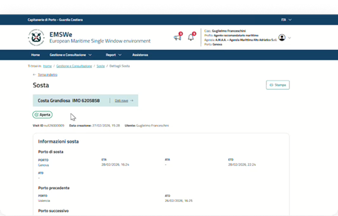
Lo stato della sosta assumerà lo stato "Chiusa" una volta fissato l'ATD e non sarà più modificabile.
04.
Cancellazione sosta
Panoramica sul flusso di cancellazione di una Sosta.
La cancellazione sarà possibile soltanto se non è stata già impostata l'ATA all'interno della sosta e se gli Obblighi di Dichiarazione presenti non siano già stati lavorati a vario titolo dall'Autorità Marittima.
Cancellazione sosta
Cancellazione sosta tramite tabella
Dopo aver creato una sosta, l'utente può eliminarla tramite le azioni presenti in tabella, attraverso i seguenti passaggi:
La sosta, una volta cancellata, non sarà più disponibile e gli Obblighi di Dichiarazione per i quali non è ancora stata svolta alcuna attività da parte del CdP verranno posti in stato "Annullata".
CancellaCancella tramite tabella
Nell'elenco risultati della ricerca delle soste è possibile eliminare la sosta selezionandola attraverso la checkbox e successivamente cliccando il pulsante "Elimina".
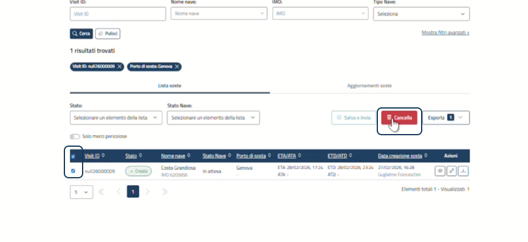
Finestra di conferma eliminazione e successo
Il sistema mostra una finestra in cui l'utente deve confermare di essere sicuro di voler eliminare la sosta. Cliccare Cancella per proseguire. Una volta eliminata il sistema lo comunica all'utente tramite alert informativo.
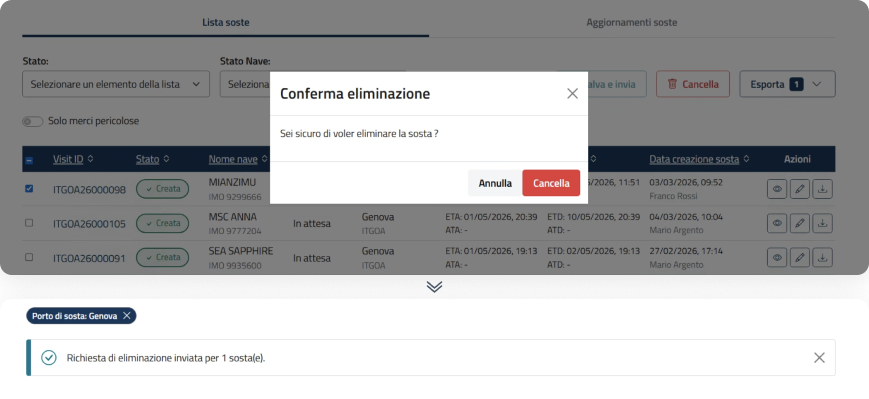
Cancellazione sosta
Cancellazione sosta dal dettaglio
Dopo aver creato una sosta, l'utente può eliminarla tramite le azioni presenti all'interno del dettaglio, attraverso i seguenti passaggi:
Cancella dal dettaglio della sosta
Nell'elenco dei risultati di ricerca delle soste è possibile accedere al dettaglio cliccando sull'"icona dell'occhio". All'interno del dettaglio per procedere con la cancellazione sarà necessario cliccare sul pulsante "Cancella".
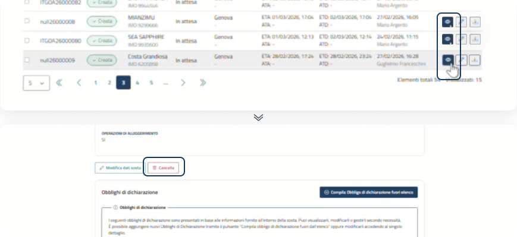
Finestra di conferma e giustificazione
Il sistema mostra una finestra di conferma che informa l'utente che l'eliminazione della sosta è irreversibile e che, una volta cancellata, non sarà più disponibile. Cliccare "Cancella sosta" per confermare.

Cancellazione sosta
Cancellazione sosta dalla dashboard
Dopo aver creato una sosta, l'utente può eliminarla tramite le azioni presenti all'interno della lista soste nella sezione "Panoramica", attraverso i seguenti passaggi:
Cancella dal dettaglio della sosta
Nell'elenco risultati delle soste è possibile accedere al dettaglio cliccando sull'"icona dell'occhio". All'interno del dettaglio per procedere con la cancellazione sarà necessario cliccare sul pulsante "Cancella".
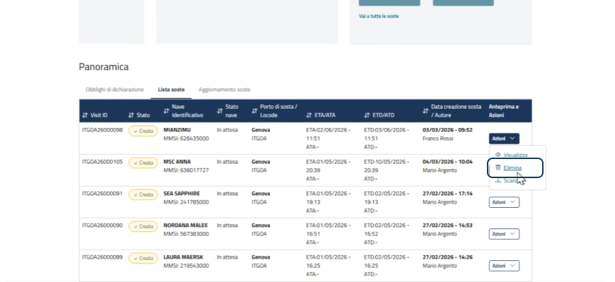
Finestra di conferma e giustificazione
Il sistema mostra una finestra di conferma. L'eliminazione della sosta è irreversibile e, una volta cancellata, non sarà più disponibile. Cliccare "Conferma eliminazione" per confermare.
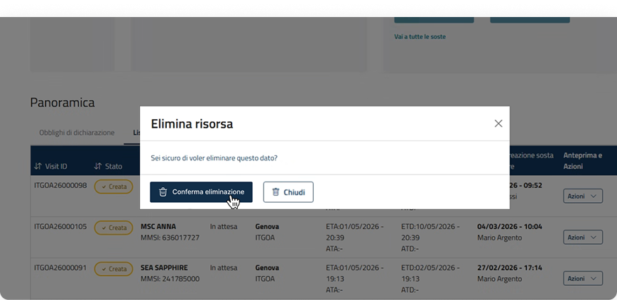